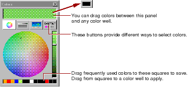

Table of Contents
Table of Contents  Next Section
Table of Contents
Next Section
Table of Contents  Previous Section
Previous Section
To set the color of selected text in the component window, click in the border of the color well in the toolbar. To set other colors, use the Page Attributes Inspector.
Clicking the border of any color well brings up the Colors panel.

The Colors panel provides several methods of selecting colors. When you select a color, it appears in the currently selected color well.
You can drag colors from one color well to another, to the window at the top of the Colors panel, or to one of the squares at the bottom of the Colors panel to save it.
Table of Contents Next Section